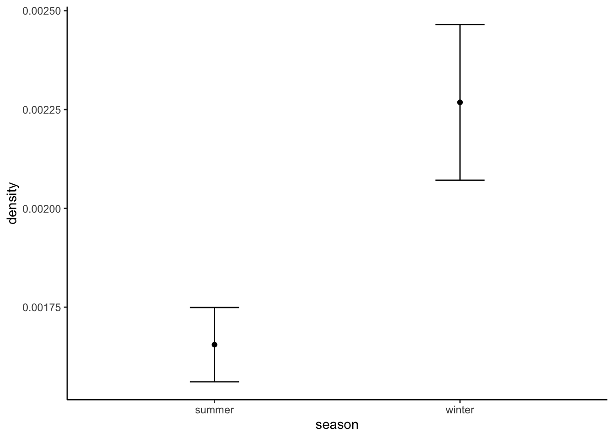
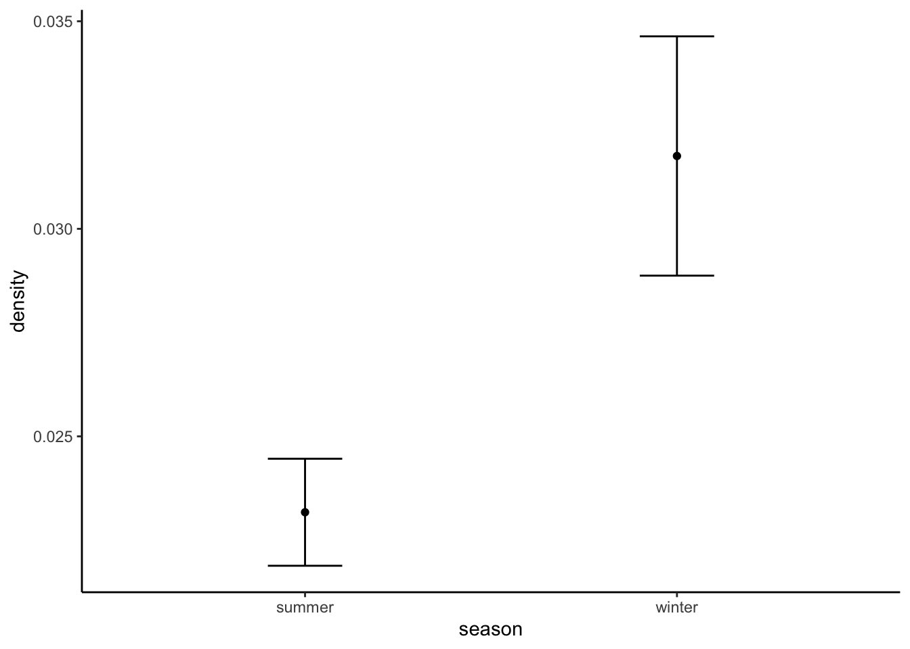

Chapter 13 Density
Precise and unbiased population density estimates are fundamental to conserve rare and vulnerable species… But it is complicated, especially with camera traps!
There we said it, estimating density from camera trap data is not easy, often isn’t precise, and can require you to move beyond “just” R (typically JAGS or Nimble). Also - over the last few years the number of approaches has grown rapidly, consequently it is impossible to cover all of them here.
There have been several great review papers published recently, and we recommend you check each one out:
Morin, Dana J., et al. “Comparison of methods for estimating density and population trends for low-density Asian bears.” Global Ecology and Conservation 35 (2022): e02058. This paper is great for overview of the different methods available with a specific species in mind - Asian black bear. They discuss the methods, and do not directly compare them.
Gilbert, N. A., Clare, J. D., Stenglein, J. L., & Zuckerberg, B. (2021). Abundance estimation of unmarked animals based on camera‐trap data. Conservation Biology, 35(1), 88-100. This paper provides a nice overview of the state of the art of density estimation of unmarked animals. They discuss the methods, and do not directly compare them.
Palencia, P., Rowcliffe, J. M., Vicente, J., & Acevedo, P. (2021). Assessing the camera trap methodologies used to estimate density of unmarked populations. Journal of Applied Ecology, 58(8), 1583-1592. A quantitative comparison of different unmarked density estimators - focusing on REM, REST and Distance methods.
13.1 Individually identifiable individuals
If you are dealing with a project with individually identifiable
animals, you are in luck as there are some great resources created by
Ian Durbach and David Borchers: https://www.scr-cameratrap.com/ and
an amazing tool for helping you design your
surveys called
secrdesign. Spatial capture recapture is considered the gold standard
in density estimation, you cannot get much better than this!
13.2 Unmarked animals
Unfortunately, it is not possible to identify individual animals for the vast majority of species detected by camera traps. There are a growing number of analysis frameworks for unmarked animals, including:
13.2.1 Random encounter model
The random encounter model is based on modelling the ‘random encounters’ between moving animals and stationary camera traps. It takes into account key variables that affect the encounter rate:
- the camera detection zone, defined by its radius and angle,
- the daily distance travelled by an animal in the population (a.k.a. day range)
Parameters required [and how you might get them]:
y = number of independent photo events [from our independent detections file] t - total survey effort [from our deployment data] v = average speed of animal movement [We could use telemetry, we could use speed derived from cameras] r = radius of camera detection zone [Could use field trials as these parameters can vary station to station] theta = angle of camera detection zone [Could use field trials as these parameters can vary station to station]
We have speed data for moose and wolf in both winter and summer (derived from telemetery studies which occured close to our region of interest). So let’s compare density estimates between winter (Oct-Mar) and summer (Apr-Sep) between these two species.
In our project we didn’t empirically measure the detection zone, so we will assume that these remain constant through time time and space.
First, install the remBoot package to help us fit the REM model.
#devtools::install_github("arcaravaggi/remBoot")
library(remBoot); library(dplyr); library(lubridate)13.2.1.1 Formatting
The formulation of the REM included in the ‘remBoot’ package is fairly
simple, a dataframe consisting of rows, there each row is an independent
detection, and with columns reflecting the strata of interest
(confusingly labeled site), location_id (labelled cam), the
group_size (labelled count), the viewshed radius (in km) and the
viewshed angle (width) in radians.
Note: in this instance, we don’t have empirically derived measures of the viewshed radius and angle, so we will use the values assessed by TrailCameraPro by Reconyx for the Hyperfire 2 (the camera model used in this study): angle = 42.9; and half the maximum distance for its range = 25m .
We can easily derive this from our independent detections data frame.
Moose first!
13.2.2 Moose
From existing literature, we are expecting moose densities of roughly 0.2-0.5 individuals per km2.
ind <- read.csv("data/processed_data/AlgarRestorationProject_30min_independent_detections.csv", header=T)
# Setup a winter and summer months variable
summer <- c("04", "05", "06", "07", "08", "09")
winter <- c("01", "02", "03", "10", "11", "12")
# Subset to moose (alces alces) and the summer months
moose_summer <- ind[ind$sp=="Alces.alces" & substr(ind$timestamp,6,7) %in% summer,c("placename", "event_groupsize")]
# rename the columns
moose_summer <- moose_summer %>%
rename("cam"=placename,
"count"=event_groupsize)
moose_summer$dist <- 0.024 # Our detection distance in km
moose_summer$theta <- 42.9*(pi/180) # Our viewshed angle
# Subset to moose (alces alces) and the winter months
moose_winter <- ind[ind$sp=="Alces.alces" & substr(ind$timestamp,6,7) %in% winter,c("placename", "event_groupsize")]
# rename the columns
moose_winter <- moose_winter %>%
rename("cam"=placename,
"count"=event_groupsize)
# Add the detection zone covariates
moose_winter$dist <- 0.024
moose_winter$theta <- 42.9*(pi/180)Finally we need two constants:
- the effort in each given strata of interest (days), and 2) the average day range of the focal animal.
To get the number of days per season, we can use the monthly_observations dataframe:
mon_obs <- read.csv("data/processed_data/AlgarRestorationProject_30min_independent_monthly_observations.csv", header=T)
summer_effort <- sum(mon_obs$days[substr(mon_obs$date, 6,7) %in% summer])
winter_effort <- sum(mon_obs$days[substr(mon_obs$date, 6,7) %in% winter])Here I will use the average daily distance for summer and winter derived from telemetry datasets on Movebank from locations close to where this camera trap study was conducted:
Moose winter = 1.07 km per day Moose summer = 1.15 km per day
Now lets fit the REM model.
nboots <- 1000
summer_rem <- rem(dat = moose_summer, tm=summer_effort, v=1.15)
winter_rem <- rem(dat = moose_winter, tm=winter_effort, v=1.07)
moose_res <- data.frame(season=c("summer", "winter"),
species="moose",
density=c(summer_rem,winter_rem),
sd=NA)
# Add the sd
tm <- summer_effort
v <- 1.15
moose_res$sd[moose_res$season=="summer"] <- sd(boot_sd(moose_summer))
tm <- winter_effort
v <- 1.07
moose_res$sd[moose_res$season=="winter"] <- sd(boot_sd(moose_winter))Take a look at your results:
## season species density sd
## 1 summer moose 0.5275170 0.01966975
## 2 winter moose 0.4094503 0.02852886Remember, we were expecting a density of around 0.2 to 0.5 individuals per km2… not bad!
Lets make a plot of the estimated densities and their standard deviations:
library(ggplot2)
p<-ggplot(moose_res, aes(x=season, y=density)) +
geom_point()+
geom_errorbar(aes(ymin=density-sd, ymax=density+sd), width=.2,
position=position_dodge(0.05)) +
theme_classic()
p
13.2.3 Wolf
From existing literature we would expect wolf densities of 0.001 - 0.025 individuals per km2.
Lets repeat our analysis for wolves:
# Subset to moose (alces alces) and the summer months
wolf_summer <- ind[ind$sp=="Canis.lupus" & substr(ind$timestamp,6,7) %in% summer,c("placename", "event_groupsize")]
# rename the columns
wolf_summer <- wolf_summer %>%
rename("cam"=placename,
"count"=event_groupsize)
wolf_summer$dist <- 0.024 # Our detection distance in km
wolf_summer$theta <- 42.9*(pi/180) # Our viewshed angle
# Subset to wolf (alces alces) and the winter months
wolf_winter <- ind[ind$sp=="Canis.lupus" & substr(ind$timestamp,6,7) %in% winter,c("placename", "event_groupsize")]
# rename the columns
wolf_winter <- wolf_winter %>%
rename("cam"=placename,
"count"=event_groupsize)
# Add the detection zone covariates
wolf_winter$dist <- 0.024
wolf_winter$theta <- 42.9*(pi/180)We have the following values for wolf movement
Wolf winter = 11.8 km per day Wolf summer = 11.9 km per day
summer_rem <- rem(dat = wolf_summer, tm=summer_effort, v=11.9)
winter_rem <- rem(dat = wolf_winter, tm=winter_effort, v=11.8)
wolf_res <- data.frame(season=c("summer", "winter"),
species="wolf",
density=c(summer_rem,winter_rem),
sd=NA)
# Add the sd
tm <- summer_effort
v <- 11.9
wolf_res$sd[wolf_res$season=="summer"] <- sd(boot_sd(wolf_summer))
tm <- winter_effort
v <- 11.8
wolf_res$sd[wolf_res$season=="winter"] <- sd(boot_sd(wolf_winter))Which again, is fairly close to our expected densities, if a little on the high side. Again let’s plot them:
library(ggplot2)
p<-ggplot(wolf_res, aes(x=season, y=density)) +
geom_point()+
geom_errorbar(aes(ymin=density-sd, ymax=density+sd), width=.2,
position=position_dodge(0.05)) +
theme_classic()
p
These estimates are in the right ball park - and suggesting that wolf densities are higher in winter.
The reference for the movement data use to calculate the movement speeds are:
13.2.4 Time to event / Space to event density estimates
NIT YET IMPLEMENTED ROBUSTLY - WILL BE UPDATED SOON
Whist the REM has been around for a while, there are a couple of new density formulations on the block! Time to event (TTE) and Space to event (STE).
Both TTE and STE models use the mathematical relationship between the poisson and exponential distributions to estimate animal density. Conceptually, TTE and STE rely on the basic idea that greater abundance in an area leads to greater detection rates at cameras. The first of these, TTE, estimates abundance from the amount of time that elapses before an animal enters the viewshed of a given camera.
TTE requires an independent estimate of animal movement rate. TTE is the only method of the three that requires an estimate of mean animal movement rate, defined across all animal behaviors, including rest (Moeller et al. 2018)
Conceptually, STE is similar to TTE with space substituted for time… In contrast to TTE, the STE model uses instantaneous sampling occasions, and therefore it does not depend on movement rate.
For both methods, cameras should be randomly or systematically deployed across the sampling frame. Practices to increase detections, such as targeting high-use trails, should be avoided as they can bias the abundance estimate. Second, the authors note that animals should have no behavioral response to cameras or camera sites. This precludes the use of bait or lures to increase encounter rates. It also means that cameras should be unobtrusive and not repel animals with bright flashes or human scent. Finally, the area viewed by each camera should be known across time and measured accurately. If camera area is not measured accurately, abundance estimates will be biased.
For STE, motion-sensor detection probability is defined by four conditions: the animal is present in the camera’s viewshed, the motion sensor detects the animal, the camera takes a picture with the animal still in view, and the user correctly identifies the species.
Sampling effort is difficult to quantify from motion-sensor photography, as the outcome (no picture) is the same whether the camera stops working, the motion-sensor doesn’t detect the animal, or the animal is absent. Time-lapse photography can help define motion-sensor effort if the two are used in conjunction. For example, time-lapse photos throughout the day will show that the batteries are functioning, the lens is clear of snow and debris, and the camera is pointed in the intended direction, which can help give confidence that the motion sensor is working as intended.
STE and TTE use camera data in a particularly unique way that may be unfamiliar to many users. Rather than using counts of individual animals or independent detection events, STE uses the amount of space sampled by cameras until an animal detection at a given time, while TTE uses the time elapsed from an arbitrary starting point to the first detection of the species of interest.
Note The details above represent an abridged form of the information in:
Again, lets attempt to repeat these methods for moose and wolves.
13.2.4.1 Moose
#library(remotes)
#remotes::install_github("annam21/spaceNtime", build_vignettes=TRUE)
library(spaceNtime)The first thing we need is a dataframe of all the detections of our focal species with three columns:
- cam: the
placename(camera location) where surveys occured - datetime: the ‘timestamp’
- count: the group count
img <- read.csv("data/processed_data/AlgarRestorationProject_raw_detections.csv", header=T)
# Make ind timestamp a date object
img$timestamp <- ymd_hms(img$timestamp)
moose_dat <- img %>%
filter(sp=="Alces.alces") %>%
dplyr::select(placename, timestamp, event_groupsize) %>%
rename(cam = placename,
datetime = timestamp,
count = event_groupsize)spaceNtime also needs camera deployment data. Luckily, the deployment
data it requires is identical to how we store deployment data - each row
represents a block of continuous activity, and if the camera ever goes
off then comes back online, that is represented as a new row.
The deployment data needs the following columns:
- cam: the
placename(camera location) where surveys occured - start: deployment start date
- end: deployment end date
- area: area in sq meters (we will use the same definition as in the REM ecample 24m depth and radius of 42.9 -> 196m2)
dep <- read.csv("data/raw_data/example_data/dep.csv", header=T)
dep$start_date <- ymd_hms(paste(dep$start_date, "12:00:00"))
dep$end_date <- ymd_hms(paste(dep$end_date, "11:59:00"))
snt_dep <- dep %>%
dplyr::select(placename, start_date, end_date) %>%
rename(cam = placename,
start = start_date,
end = end_date)
snt_dep$area <- 196
# Remove the NA
snt_dep <- snt_dep[is.na(snt_dep$end)==F,]After defining the detection dataframe and deployment data we need to specify the sampling occasions. This can be done manually or with the function build_occ(). The sampling occasions should be in a data.frame or tibble with the following structure:
summer_dates <- as.POSIXct(c("2018-04-07 00:00:00", "2018-09-30 23:59:59"), tz = "GMT")
summer_occ <- build_occ(samp_freq = 30, # seconds between the start of each sampling occasion
samp_length = 2, # duration of each sampling occasion (seconds)
study_start = study_dates[1],
study_end = study_dates[2])
# Then build our dataframe
ste_summer <- ste_build_eh(moose_dat, snt_dep, summer_occ)
winter_dates <- as.POSIXct(c("2018-10-01 00:00:00", "2019-03-31 23:59:59"), tz = "GMT")
winter_occ <- build_occ(samp_freq = 30, # seconds between the start of each sampling occasion
samp_length = 2, # duration of each sampling occasion (seconds)
study_start = study_dates[1],
study_end = study_dates[2])
# Then build our dataframe
ste_winter <- ste_build_eh(moose_dat, snt_dep, winter_occ)
# Run the models
moose_summer_res <- ste_estN_fn(ste_summer, study_area = 1e6) # specify 1 sq kilometer
moose_wnter_res <- ste_estN_fn(ste_winter, study_area = 1e6) # specify 1 sq kilometerAn application of this method on wolves can be seen here:
They didn’t estimate viewshed size either: “we did not estimate viewshed area during camera deployment; thus, we used a viewshed area based on expected performance of motion-triggered cameras. We assumed the cameras detected wolves within a 106-m2, pie-slice shape area in front of the camera derived from standard field protocols and that the motion trigger detected all wolves that passed through the viewshed.”
13.2.7 Unmarked spatial capture recapture (uSCR)
Here you have to currently have to go beyond R - but there are some good options and exciting new developments. See Gilbert et al. 2021 for more details.
13.3 Future directions
Direct comparisons of the different methods are starting to appear:
“Further, while unmarked methods require less information and model parameters, there is far greater risk of bias in estimates resulting from model assumptions that are difficult to validate. The inconsistencies in precision of unmarked empirical estimates, even within the same study designs, sites, and species (Table 3), likely demonstrate unaccounted assumption violations pertaining to animal movement and we would expect these issues to extend to most Asian bear populations.”
The future of determining viewshed area:
Nice way of estimating “day range” from camera traps which is equivalent to telemetry data Palencia, Pablo, et al. “Estimating day range from camera‐trap data: the animals’ behaviour as a key parameter.” Journal of Zoology 309.3 (2019): 182-190.
And Pablo Palencia has a nice package to help you integrate speed data derived from cameras with activity data derived from camera traps in the activity package. See the Activity chapter!